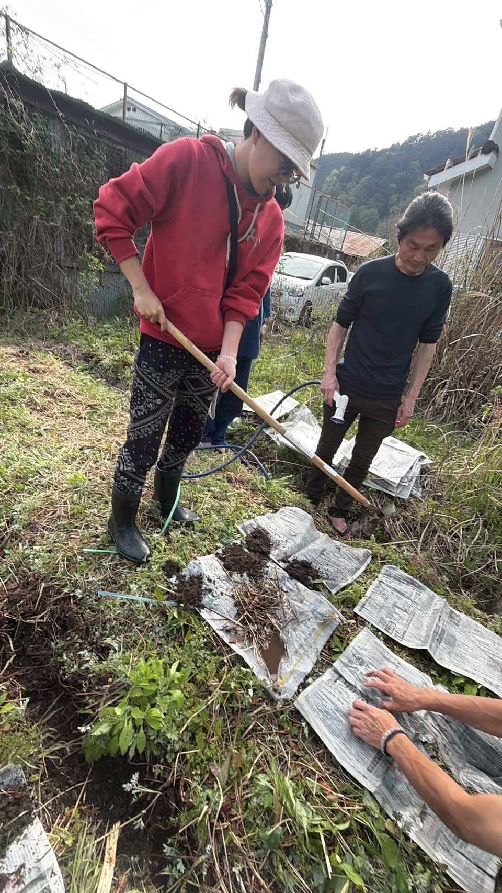
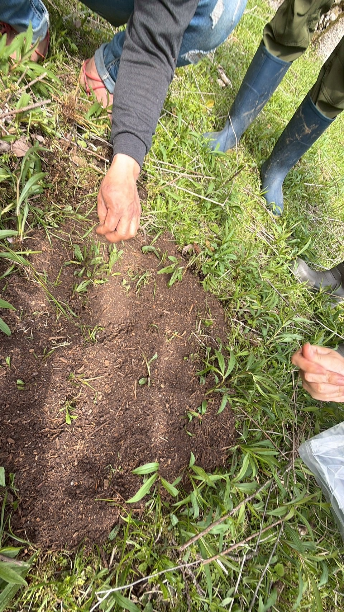

02 — FIRST EVENT
第1回は、こんな様子で行いました
2026年4月28日、天川村洞川の耕作放棄地で、第1回「ほったらかし自然農 体験イベント」を開催しました。
土に触れ、Bちゃんを囲み、自然農法の入口を実際に体験する時間になりました。第2回は、この手応えを受けて、ウラマリコさんの民泊裏の畑で開催します。






なんか、凄く深い学びをした気持ちです。それでいて、肩の力が抜けたような。皆さんとのお話しも楽しくて、時間を忘れてしまいそうでした。
安川真紀子 さん
今日は学び＆きづき＆ご縁をたくさんいただいてありがタケ〜です。まずは明日のお昼にBちゃんを蒔きます。
池田亮 さん
皆さまという仲間に出会えたことがまず財産だなと思います。私も今年はいろんな野菜を試しに作ってみたいなと思いました。
うらら さん